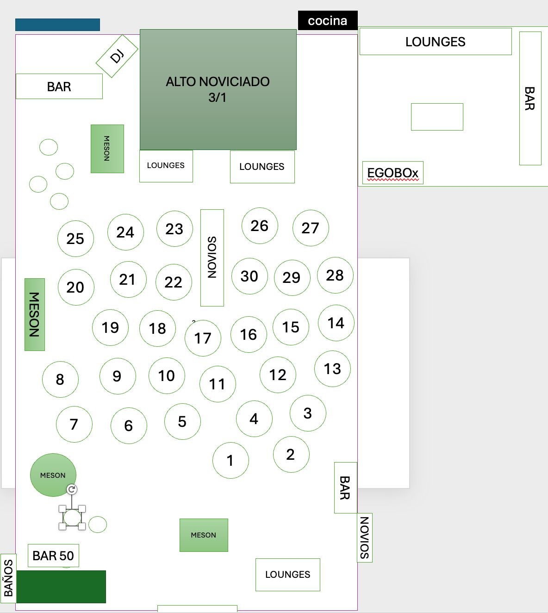

Alto Noviciado · Cata & Boris
Matrimonio Cata & Boris
Ingresa tu nombre tal como aparece en la invitación para conocer tu mesa dentro del salón.
¿Cómo se usa?
- Escanea el QR del evento y abre esta página.
- Escribe tu nombre y presiona “Buscar mesa”.
- Dirígete a la mesa indicada y muestra el resultado al anfitrión.
Plano del salón
Abre el plano para identificar rápidamente la ubicación de cada mesa.

Tocar para ver en pantalla completa
Versión listas de invitados actualizada a partir del archivo “MATRIMONIO_Cata_Boris_FINAL-1_0403.xlsx”.
Si necesitas actualizarla, genera un nuevo JSON con scripts/guestlist-to-json.py y reemplaza data/guests-cata-boris.json.